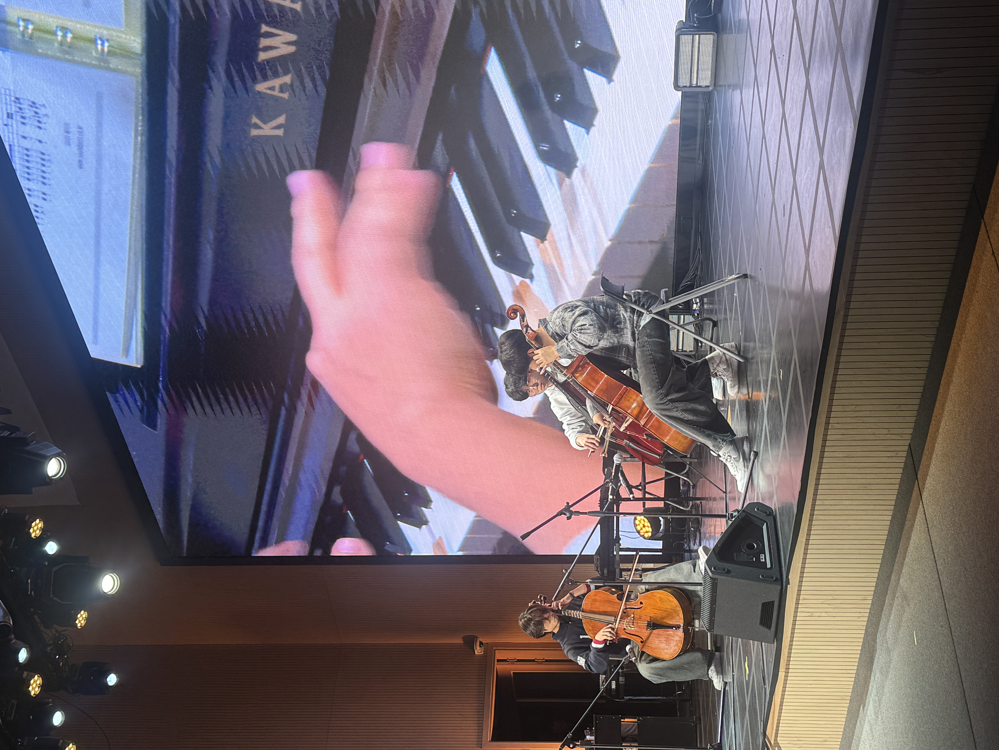
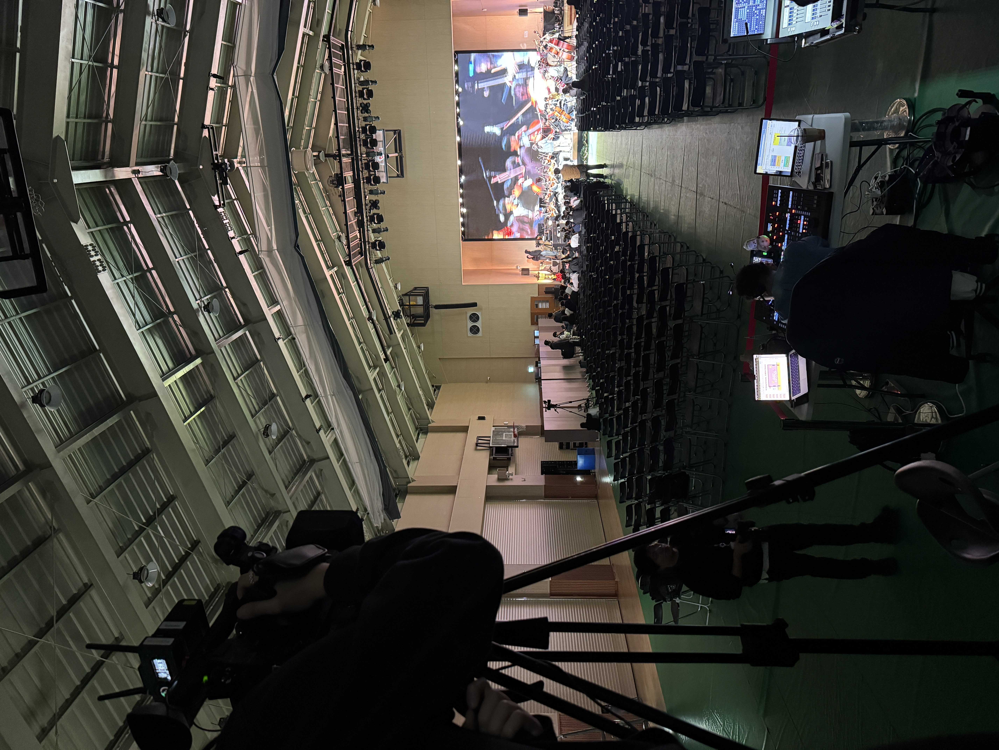
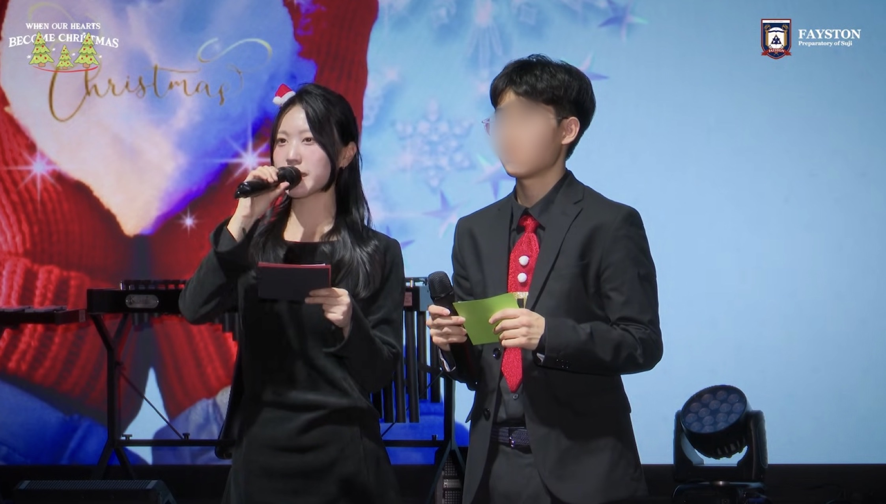

Finding my voice through school broadcasting,
leadership and the Christmas Concert.

PHOTO 01 / THE REHEARSAL
Before the Spotlight
I was not a member of my school's media team,
but I wanted to experience broadcasting for myself.
Instead of waiting for an opportunity, I asked
if I could help with the morning announcements.
I began writing scripts and speaking on the
school broadcast.
Over time, my teachers noticed how seriously
I took each opportunity. When the school began
preparing for its annual Christmas Concert,
I was recommended to serve as one of the main MCs.

PHOTO 02 / BEHIND THE SCENES
Learning to Lead Behind the Stage
During rehearsals, I watched my classmates
perform while the media team checked the cameras
and sound. I worked with the team to review
parts of the rehearsal that needed improvement.
I had always loved the idea of speaking on stage,
but the rehearsals showed me another side of
the experience. A successful concert depended
on many people working together, including
those the audience would never see.

PHOTO 03 / CONCERT DAY
Finding My Voice on Stage
On the day of the Christmas Concert, I stood
on stage with a microphone in my hand.
I was no longer practicing announcements
in a classroom. I was speaking in front of
students, teachers and families.
As I introduced each performance, I remembered
how this opportunity had started with a simple
request to join the morning broadcasts.
That experience taught me that I did not have
to wait for someone to offer me a chance.
Sometimes, I had to ask for one first.